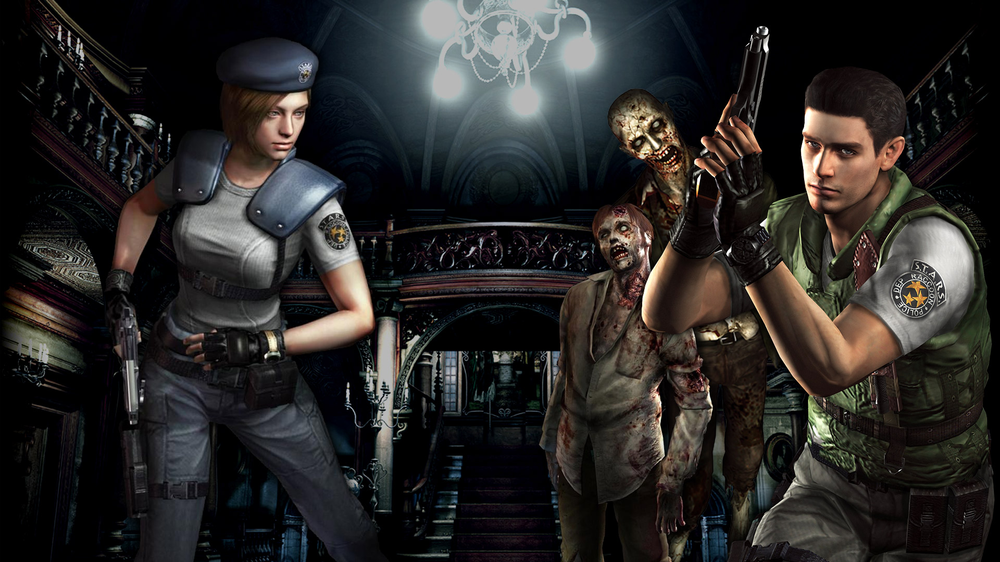

Resident Evil, known in Japan as Biohazard, is a Japanese horror video game series and media franchise created by Capcom. It consists of survival horror, third-person shooter and first-person shooter games, with players typically surviving in environments filled with zombies and other creatures. The franchise has expanded into a live-action film series, animated films, television series, comic books, novels, audio dramas, and other media and merchandise.
The first Resident Evil was created by Shinji Mikami and Tokuro Fujiwara and released for the PlayStation in 1996. It is credited for defining the survival horror genre and returning zombies to popular culture. With Resident Evil 4 (2005), the franchise shifted to more dynamic shooting action; it influenced the evolution of the survival horror and third-person genres, popularizing the "over-the-shoulder" third-person view. Resident Evil 7: Biohazard (2017) moved the series to a first-person perspective. Capcom has also released three Resident Evil remakes: Resident Evil (2002), Resident Evil 2 (2019) and Resident Evil 3 (2020), with a Resident Evil 4 remake scheduled for 2023.
ENTER SURVIVAL HORRORIn 1998 a special forces team is sent to investigate some bizarre murders on the outskirts of Raccoon City. Upon arriving they are attacked by a pack of blood-thirsty dogs and are forced to take cover in a nearby mansion. But the scent of death hangs heavy in the air. Supplies are scarce as they struggle to stay alive.
 Graphics• More detailed graphics that retain the horror.
• The environments come alive with detail thanks to resolution upgrades and non-static 3D models.
• Post-processing effects like Bloom filters, which were not easy to do at the time of the original release, have been added to make the HD graphics even more realistic.
• High-Resolution Environments - We've increased the resolution of the background environments by recreating them with a mix of high-res static images, plus animated 3D models.
Widescreen Support• Widescreen (16:9) is supported, so players can experience a greater sense of immersion.
• In widescreen mode, the screen will scroll. The parts of the screen that get cut off on the top and bottom will scroll into view automatically depending on the character's position.
• You can switch the display mode during gameplay in real time.
Sound & New Controls• High-Quality Sound - The audio has been remastered to increase the sampling rate, and of course 5.1ch output is also now supported.
• New Controls
• You can play using the original control scheme or an alternate control scheme that lets you just push the analog stick to move in the direction you want to go.
• You can switch the control scheme during gameplay in real time.